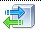

Cерверная часть¶
Установка выполняется на том же сервере, где стоит IIS ТИ. Поэтому установка самого IIS не рассматривается, если она требуется, поищите инструкции в интернете.
Установка Python и библиотек¶
Программа написано и была проверена на python 3.5, но я думаю она будет работать под любым python3.
- Установите python3 (https://www.python.org/downloads/). При установке обратите внимание, что надо ставить для всех пользователей и добавить python в path.
- Установите дополнительную библиотеку для работы с БД MS SQL. Для этого откройте CMD с правами администратора и выполните: pip install pypyodbc Компьютер должен быть подключен к интернету. Если не подключен, то на другом выполните: pip download pypyodbc он скачает пакет, далее перенесите пакет на сервер и выполните там: pip install полный_путь_к_pypyodbc
Далее Вы должны выбрать один из 2-х способов взаимодействия:
- Через веб-сервис. Это быстро и надежно, немного сложнее настраивать и надо иметь IP адрес доступный для Zabbix.
- Через передачу данных на FTP. Способ подходит для тех, к кого постоянного IP нет или на нем 80 порт закрыт. При этом требуется доступ к FТP Социнформех.
Работа через FTP¶
- Нужно стакачать из репозитария программу.
- В конфигурационном файле заполнить данные про FTP сервер.
- Настроить запуск файла ftp.py каждый час: в 10:00:10, 11:00:10 и т.д. через расписание Windows.
Настройка IIS (для веб-сервиса)¶
- Установить CGI для IIS, как написано тут - http://netdot.co/2015/03/09/flask-on-iis/
- В папку IIS wwwroot добавить папку monitor, скопируйте туда файлы от серверной части - Состав.
- В диспетчере службы IIS добавьте пул приложения, это в будущем даст возможность перезапускать только его или избежать конфликтов с другими приложениями.
- В диспетчера нажмите на папку правой кнопкой и выберите добавить приложение, после этого рядом с папкой появится значок интернета.
- В диспетчере нажмите  и добавьте новый обработчик для файлов .py. Обратите внимание, что надо правильно задать путь для python.
Настройка программы¶
Чтобы монитор мог работать знать адрес БД ТИ и уметь к ней подключатся, это настраивается в файл config.ini. Файл снабжен комментариями, пожалуйста заполните его для своей системы.
Запуск тестов (для веб-сервиса)¶
После установки и настройки ПО нужно запустить тесты для проверки его работы. Набор тестов запускается на сервере, где установлен IIS.
- Открой CMD и перейдите в каталог с установленным tests.py.
- Запустить тестовое приложение: python -m unittest tests.py. В случае успешной работы напишет - ОК, иначе ошибки.
Возможные проблемы¶
- Тест не запустился. Пишет, что python не является программой - надо добавить его в path.
- Запустился, но ругается на отсутствие модуля pypyodbc - установите его, как написано выше.
- Провалился тест подключения к БД - проверьте конфигурационный файл.
- Провалились другие тесты - проверьте процесс установки, вероятно неправильно настроен IIS. Можете попробовать перейти в браузере по ссылке http://127.0.0.1/monitor/cgi.py/test и почитать, в чем причина.
Описание работы (для веб-сервиса)¶
- Серверная часть представляет собой веб-сервис, работающий под управлением IIS. Взаимодействие с IIS выполняется используя CGI, взаимодействие с клиентом - REST сервис, ответ JSON структура. После развертывания веб-сервис ожидает запроса по адресу http://IP/monitor/cgi.py. При получении запроса происходит обращение в БД ТИ и извлекается протокол за предыдущий час. Так если запрос пришел в 9:54, то будет извлечен протокол с 8:00 до 8:59. Операция довольно трудоемкая, поэтому предусмотрены следующие особенности:
- извлекаются сразу все записи протокола;
- они анализируются на стороне ПО Monitor и извлекаются сразу все данные, которые может вернуть сервер;
- в каждом ответе сервера содержатся сразу все данные, разбор их происходит на стороне клиента;
- т.к. из-за особенностей работы Zabbix приходится спрашивать отдельно по каждому виду сведений, чтобы избежать многократного опроса БД, введено кэширование данные (программой - 10 мин.) Поэтому рекомендуется в течении этого периода послать все запросы. Далее будут примеры, где можно посмотреть как это работает.
Сервис рассчитан на взаимодействие с клиентом (из состава ПО), но далее приведу примеры запросов, их можно использовать интеграции со сторонним ПО или дополнительной проверки работы. Запросы можно выполнять прямо из браузера, к запросам можно переходить только если выполнили установку и успешное тестирование.
Тестовый запрос¶
Он Всегда возвращает одинаковое значение, обращение к БД не происходит. Запрос:
http://127.0.0.1/monitor/cgi.py/test
Ответ:
{"errorCode": 0, "info": {"test": 20}, "errorMessage": "", "date": "18.01.2017 08:55:06"}
Запрос возвращающий данные¶
Возвращает данные, выполняет запрос к БД. Запрос:
http://127.0.0.1/monitor/cgi.py
Ответ:
{
"date": "01.02.2017 13:45:30",
"errorCode": 0,
"errorMessage": "",
"info": {
"loadToASP": 1,
"loadToTI": 0,
"requestPGU": 3,
"requestSmev": 0,
"responsePGU": 0,
"responseSmev": 0
}
}
Запрос с ошибкой¶
Запрос на метод, который всегда возвращает ошибку. Может пригодится для отладки ПО, тестирования. Обращение к БД не происходит. Запрос:
http://127.0.0.1/monitor/cgi.py/error
Ответ:
{"errorMessage": "Это тестовое сообщение об ошибке", "date": "18.01.2017 08:58:10", "errorCode": 42}
Запрос с неверным указанием параметров¶
Если неправильно указать параметры запроса, то это будет обработано. Обращение к БД не происходит. Запрос:
http://127.0.0.1/monitor/cgi.py/foo
Ответ:
{"errorMessage": "Монитор вызван с недокументированным методом", "errorCode": 2, "date": "18.01.2017 09:00:05"}